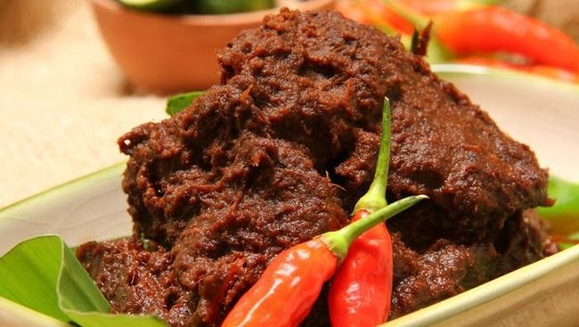
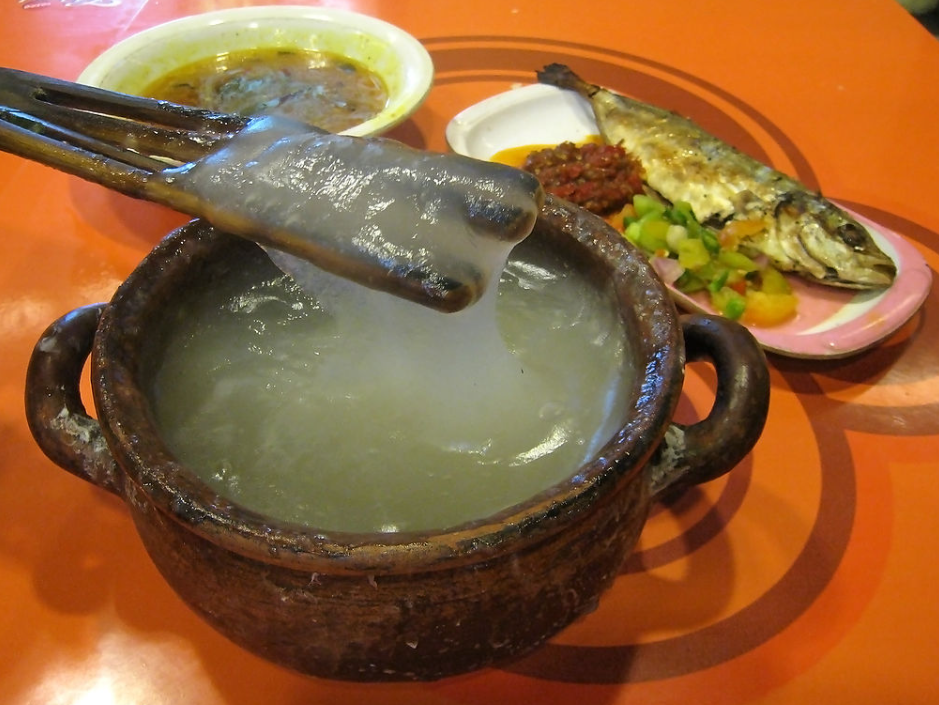

Resep Ayam Betutu
Bahan:
- 1 ekor ayam, ambil bagian dalam isi ayam
- 1 buah jeruk nipis
- 1 sendok teh garam
- 100 gram daun singkong rebus, iris halus
- 2 batang serai, iris bagian yang putih
- 4 lembar daun jeruk
- 3 sendok makan minyak untuk menumis
- Daun pisang secukupnya
Bumbu Halus
- 7 siung bawang merah
- 5 siung bawang putih
- 6 buah cabai merah
- 4 buah cabai merah rawit merah
- 1 sendok teh terasi
- 2 cm kunyit
- ½ sendok makan ketumbar
- 2 cm jahe, parut
- 2 cm lengkuas, parut
- Garam dan gula merah secukupnya
Cara Memasak
- Lumuri ayam dengan air jeruk nipis dan garam, diamkan selama 10 menit, sisihkan.
- Panaskan minyak, tumis bumbu halus hingga harum, tambahkan dengan serai iris, aduk rata, angkat.
- Bagi bumbu tumis menjadi 2, 1 bagian campur dengan daun singkong dan jeruk, aduk rata. Sisanya lumurkan pada seluruh bagian luar ayam.
- Masukkan daun singkong yang telah dibumbui ke dalam rongga ayam.
- Bungkus ayam dengan daun pisang. Panaskan panci pengukus, kukus ayam selama 20 menit, angkat.
- Panggang ayam yang telah dikukus hingga matang, angkat.
- Sajikan ayam dengan cara dibelah dengan isinya.Untuk 8 Orang

Sulawesi - Coto Makassar
Bahan
- 500 gram daging sapi, potong dadu
- 200 gram jeroan sapi (hati, limpa, usus), rebus dan potong-potong
- 100 gram kacang tanah, sangrai dan haluskan
- 3 batang serai, memarkan
- 2 lembar daun salam
- 2 cm lengkuas, memarkan
- 2 sendok makan minyak goreng
- 2 sendok makan bawang goreng
- Garam dan merica secukupnya
- Air secukupnya
Bumbu Halus
- 6 butir bawang merah
- 4 siung bawang putih
- 3 cm jahe
- 3 cm kunyit
- 3 cm lengkuas
- 3 butir kemiri
- 1 sendok teh ketumbar
Cara Memasak:
- 1. Cara membuat Coto Makassar yang asli dengan daging sapi dimulai dengan membersihkan daging, dan potong bentuk dadu, lalu rebus sebentar sampai mendidih.
- 2. Buang air rebusan daging dan tiriskan. Kemudian cara membuat Coto Makassar yang asli dengan daging sapi, dalam panci masukkan air, daging, sereh, daun jeruk, daun salam. Nyalakan api (slow cook).
- 3. Tumis bumbu sampai harum dan matang, cara membuat Coto Makassar yang asli dengan daging sapi masukkan bumbu yang sudah ditumis ke dalam panci rebusan daging.
- 4. Tambahkan kacang tanah tumbuk, garam dan gula secukupnya. Kemudian cara membuat Coto Makassar yang asli dengan daging sapi, masak sampai daging empuk, taburi dengan bawang goreng dan daun bawang.
- 5. Sajikan dengan ketupat atau nasi, cara membuat Coto Makassar yang asli dengan daging sapi selesai.

Kalimantan - Pepes Ikan Baung
Bahan
- 500 gram ikan baung, bersihkan
- 5 lembar daun pisang, potong-potong
- 3 batang serai, memarkan
- 2 lembar daun salam
- 2 cm lengkuas, memarkan
- 2 sendok makan minyak goreng
Bumbu Halus
- 5 butir bawang merah
- 3 siung bawang putih
- 5 buah cabai merah keriting
- 2 cm kunyit
- 2 cm Jahe
- 1 sendok teh terasi (opsional)
- Garam dan Gula secukupnya
Cara Memasak:
- 1. Campurkan ikan dengan bumbu halus, garam, dan gula. Aduk rata.
- 2. Ambil selembar daun pisang, letakkan sejumput bumbu, serai, daun salam, dan lengkuas di atasnya.
- 3. Letakkan potongan ikan di atasnya dan tutup kembali dengan bumbu dan rempah.
- 4. Bungkus dengan daun pisang, rapatkan dengan lidi atau tali rafia.
- 5. Bungkus dengan daun pisang, rapatkan dengan lidi atau tali rafia.
- 6. Sajikan pepes ikan baung selagi hangat.

Sumatra Barat - Rendang Sapi
Bahan
- 1 kg daging sapi
- 3 butir kelapa, diambil santan kental dan santan encernya
- 4 lembar daun jeruk
- 3 batang serai, memarkan
- 4 butir asam kandis
- 100ml minyak goreng
- 5 gram garam
Bumbu Rendang :
- 60 gram bawang merah
- 50 gram bawang putih
- 250 gram cabai merah besar
- 100 gram lengkuas
- 2 cm Jahe
- 50 gram kemiri
- 2 gram cengkeh
Cara Memasak :
- 1. Haluskan semua bahan Bumbu dengan diulek atau diblender.
- 2. Tumis bumbu dengan sedikit minyak goreng hingga wangi.
- 3. Masukkan batang serai, daun jeruk, asam kandis dan garam, aduk rata.
- 4. Tuangi santan dan dididihkan, masukkan daging.
- 5. Masak dengan api kecil selama beberapa jam sampai daging empuk dan bumbu kecoklatan sesuai selera.

Papua - Papeda
Bahan
- 200 gram sagu mutiara
- 750 ml air
- Garam secukupnya
Cara Memasak :
- 1. Didihkan air dalam panci.
- 2. Masukkan sagu mutiara sedikit demi sedikit sambil terus diaduk hingga mengental dan matang.
- 3. Tambahkan garam secukupnya.
- 4. Aduk terus hingga papeda benar-benar mengental.
- 5. Sajikan papeda dengan ikan kuah kuning atau daging papeda sebagai pelengkap.
...